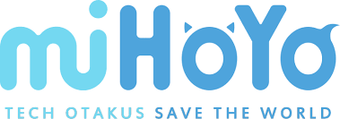
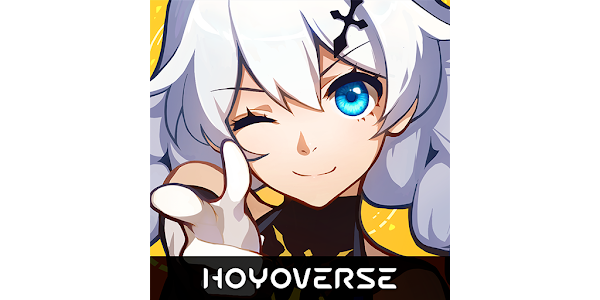
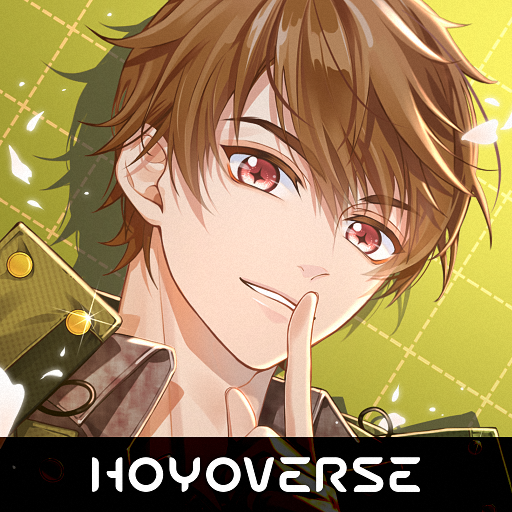
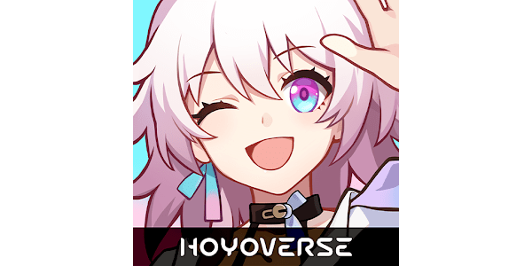
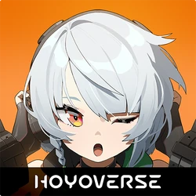

Apa Itu Mihoyo

miHoYo adalah perusahaan pengembang permainan video berbasis di Shanghai, Tiongkok, yang didirikan pada tahun 2012 oleh tiga mahasiswa Shanghai Jiao Tong University: Cai Haoyu, Luo Yuhao, dan Li Wei. Sejak awal, miHoYo telah memposisikan
dirinya sebagai pelopor di industri permainan video dengan fokus pada kualitas grafis, narasi mendalam, dan pengalaman bermain yang unik. Perusahaan ini menjadi terkenal di dunia internasional berkat game-game populer mereka, seperti Honkai Impact
3rd, Genshin Impact, dan Tears of Themis, serta perkembangan metaverse yang mereka sebut sebagai HoYoverse.
Latar Belakang dan Filosofi Perusahaan
Slogan miHoYo adalah "Tech Otakus Save the World", yang mencerminkan ambisi mereka untuk menciptakan dunia digital yang menggabungkan teknologi mutakhir dengan kecintaan mereka terhadap budaya pop, khususnya anime dan game.
Mereka memiliki pendekatan unik dalam pengembangan game, dengan perhatian yang sangat detail terhadap visual dan narasi. Perusahaan ini sering terinspirasi dari gaya anime Jepang, dengan karakter yang sangat digemari oleh para pemain, terutama
di kalangan penggemar budaya anime dan manga.
HoYoverse: Visi Masa Depan
Pada tahun 2022, miHoYo memperkenalkan HoYoverse, sebuah konsep yang lebih luas dari sekadar game. HoYoverse mencerminkan ambisi miHoYo untuk menciptakan dunia digital yang melampaui pengalaman bermain game semata. Ini termasuk berbagai produk hiburan
yang melibatkan realitas virtual (VR), realitas tertambah (AR), serta teknologi berbasis kecerdasan buatan (AI). Tujuan dari HoYoverse adalah untuk menciptakan dunia virtual yang terintegrasi dengan dunia fisik, di mana para pemain dapat merasakan
pengalaman imersif yang lebih mendalam dan tidak terbatas pada platform tertentu. Dengan HoYoverse, miHoYo berencana untuk memperluas dampak mereka dalam industri hiburan secara keseluruhan, bukan hanya sebagai perusahaan game, tetapi juga sebagai
inovator di bidang teknologi dan hiburan virtual. HoYoverse berfokus pada penyediaan pengalaman virtual yang mendalam di berbagai platform, termasuk animasi, musik, komik, dan konten lainnya yang mendukung game-game mereka.
Inovasi dalam Desain Game dan Monetisasi
miHoYo dikenal karena inovasi dalam model bisnis dan desain permainan, terutama melalui penggunaan mekanik gacha yang sangat sukses. Gacha memungkinkan pemain untuk membeli item atau karakter langka melalui sistem undian, yang menghasilkan pendapatan
yang sangat besar. Namun, ini juga menimbulkan kritik karena sifatnya yang bisa dianggap seperti perjudian, terutama bagi pemain muda. Meskipun demikian, model gacha telah terbukti menjadi salah satu pendekatan paling menguntungkan dalam industri
permainan video, dan miHoYo telah menjadi salah satu perusahaan yang paling sukses memanfaatkan model ini. Selain itu, miHoYo juga mengedepankan kualitas dan pengalaman visual dalam game mereka. Mereka terus berinvestasi dalam teknologi grafis
terbaru dan sering kali membandingkan kualitas grafis game mereka dengan game konsol terkemuka. Hal ini menjadikan miHoYo sebagai pelopor dalam mendorong batasan teknis di industri game, baik di platform mobile maupun PC.
Kesuksesan Global
Dengan lebih dari 20 juta pemain yang mendaftar untuk Genshin Impact sebelum peluncurannya dan kesuksesan berkelanjutan dari Honkai Impact 3rd, miHoYo telah menjadi salah satu perusahaan game terkemuka di dunia. Mereka memiliki basis penggemar global
yang sangat setia, terutama karena kualitas tinggi dari konten yang mereka hasilkan, termasuk karakter yang sangat populer dan cerita yang mendalam. Kesuksesan finansial miHoYo juga signifikan. Genshin Impact, misalnya, menjadi salah satu game
paling menguntungkan di dunia hanya beberapa bulan setelah peluncurannya, dengan pendapatan yang terus meningkat melalui pembelian dalam game. miHoYo berhasil menciptakan game yang tidak hanya disukai oleh penggemar, tetapi juga menghasilkan pendapatan
yang luar biasa.
Game Apa Saja Yang Ada Di HoYoverse(miHoYo)
- Honkai Impact 3rd (2016)

- Genre: Action RPG, Hack-and-Slash
- Platform: PC, iOS, Android
- Deskripsi: Honkai Impact 3rd adalah game aksi dengan latar dunia futuristik yang dilanda bencana akibat kekuatan misterius yang dikenal sebagai Honkai. Pemain mengontrol Valkyries, sekelompok prajurit perempuan yang melawan ancaman Honkai.
Gameplay-nya menampilkan pertarungan hack-and-slash dengan grafis yang spektakuler dan cerita emosional yang mendalam.
Silakan klik tautan di bawah ini jika Anda ingin mengunduh
Download Honkai_Impact3rd
- Genshin Impact (2020)

- Genre: Action RPG, Open World
- Platform: PC, PlayStation 4/5, iOS, Android
- Deskripsi: Genshin Impact adalah game action RPG dunia terbuka yang berlatar di dunia fiksi Teyvat. Pemain mengeksplorasi berbagai wilayah, memecahkan teka-teki, melawan monster, dan membuka karakter melalui sistem gacha. Game ini menawarkan
grafis indah, musik orkestra, dan cerita mendalam tentang tujuh negara yang terinspirasi oleh elemen-elemen alam seperti api, air, dan angin.
Silakan klik tautan di bawah ini jika Anda ingin mengunduh
Download Genshin Impact
- Tears of Themis (2020)

- Genre: Visual Novel, Misteri, Otome
- Platform: iOS, Android
- Deskripsi: Tears of Themis adalah game novel visual interaktif yang berfokus pada misteri dan hubungan romantis. Pemain berperan sebagai seorang pengacara muda yang menyelidiki berbagai kasus kriminal dan berinteraksi dengan empat pria utama,
sembari membangun hubungan emosional dengan mereka. Game ini memadukan elemen investigasi dan cerita romantis.
Silakan klik tautan di bawah ini jika Anda ingin mengunduh
Download Tears of Themis
- Honkai: Star Rail (2023)

- Genre: Turn-based RPG
- Platform: iOS, Android
- Deskripsi: Honkai: Star Rail adalah game RPG berbasis giliran yang berlatar di alam semesta yang sama dengan Honkai Impact 3rd, tetapi dengan cerita yang lebih luas dan elemen eksplorasi luar angkasa. Pemain menaiki kereta luar angkasa yang
disebut Astral Express dan menjelajahi berbagai planet, melawan musuh dalam pertarungan berbasis strategi.
Silakan klik tautan di bawah ini jika Anda ingin mengunduh
Download Honkai Star Rail
- Zenless Zone Zero (2024)

- Genre: Action RPG, Dungeon Crawler
- Platform: PC, iOS, Android
- Deskripsi: Zenless Zone Zero adalah game action RPG yang berlatar di kota futuristik bernama New Eridu. Game ini menampilkan gameplay dungeon-crawling di mana pemain melawan monster menggunakan karakter dengan berbagai kemampuan unik. Zenless
Zone Zero berfokus pada pertarungan cepat dan elemen gaya hidup urban yang penuh dengan intrik dan misteri.
Silakan klik tautan di bawah ini jika Anda ingin mengunduh
Download ZZZ